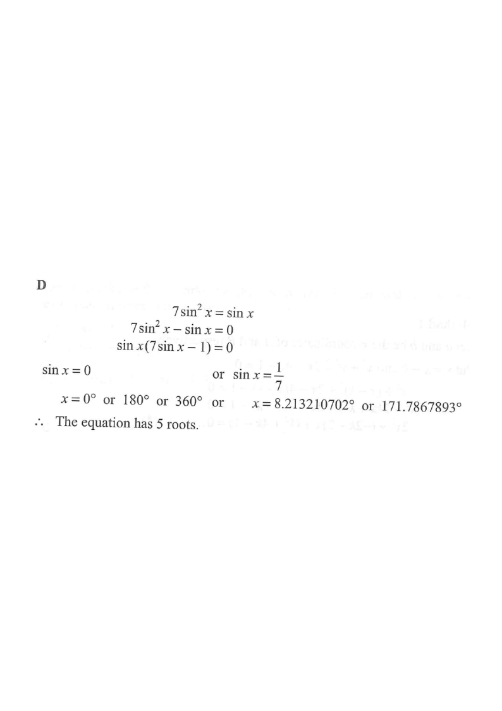

HKDSE 2014 Paper 2 · Q39 — Trigonometry: number of roots
y = 7 sin²x
y = sin x
root sin x = 0
root sin x = 1/7
unit circle
[2014 MC #39]
For $0^\circ \le x \le 360^\circ$, how many roots does the equation
$$7\sin^2 x = \sin x$$ have?
A. 2
B. 3
C. 4
D. 5

Figure (original exam diagram)
Step 1 · Bring everything to one side
$$7\sin^2 x = \sin x$$
$$7\sin^2 x - \sin x = 0$$
Never divide by $\sin x$ — you would lose the roots where $\sin x = 0$.
Step 2 · Factorise
$$\sin x\,(7\sin x - 1) = 0$$
So the equation splits into two independent cases:
$$\sin x = 0 \quad \text{or} \quad \sin x = \tfrac{1}{7}.$$
Zero Product Property\(AB=0 \iff A=0 \text{ or } B=0\)\(\sin x\,(7\sin x-1)=0\) splits into \(\sin x=0\) and \(\sin x= frac{1}{7}\).
Step 3 · Solve sin x = 0
Within $0^\circ \le x \le 360^\circ$:
$$x = 0^\circ,\; 180^\circ,\; 360^\circ$$
3 roots (all lie on the $x$-axis — green dots).
Step 4 · Solve sin x = 1/7
Since $0 < \tfrac{1}{7} < 1$, the principal value is
$x_0 = \sin^{-1}\!\frac{1}{7} \approx 8.21^\circ$.
Sine is positive in QI and QII, so:
$$x \approx 8.2132^\circ \quad \text{or} \quad x \approx 180^\circ - 8.2132^\circ = 171.7868^\circ$$
2 roots (amber dots).
Only one turn of the circle, so no further solutions.
Sine is Positive in Quadrants I and II\(\sin(180^{\circ}-\theta)=\sin\theta\)The second root is \(180^{\circ}-8.21^{\circ}\), which still lies in \(0^{\circ}\le x\le 360^{\circ}\).
Step 5 · Count all roots
$$3 \;(\text{from } \sin x = 0) \;+\; 2 \;(\text{from } \sin x = \tfrac17) \;=\; 5$$
The two families do not overlap, so the total number of distinct roots is 5.
Period of the Sine Function\(\text{period of } \sin x=360^{\circ}\)Only one complete turn of the circle is needed, so the five roots found are the full set.
ANSWER
D. 5 roots
PRACTICESimilar question — try it yourself
Question. Solve \(5\sin^{2}x=\sin x\) for \(0^{\circ}\le x\le 360^{\circ}\), and state the number of roots.
Show the worked solution
Step 1. Bring all terms to one side: \(5\sin^{2}x-\sin x=0\).
Step 2. Factorise: \(\sin x\,(5\sin x-1)=0\), so \(\sin x=0\) or \(\sin x=\tfrac{1}{5}\).
Step 3. \(\sin x=0\) gives \(x=0^{\circ},180^{\circ},360^{\circ}\) — three roots.
Step 4. \(\sin x=\tfrac{1}{5}\) gives \(x\approx 11.5^{\circ}\) in quadrant I and \(x\approx 180^{\circ}-11.5^{\circ}=168.5^{\circ}\) in quadrant II — two more roots.